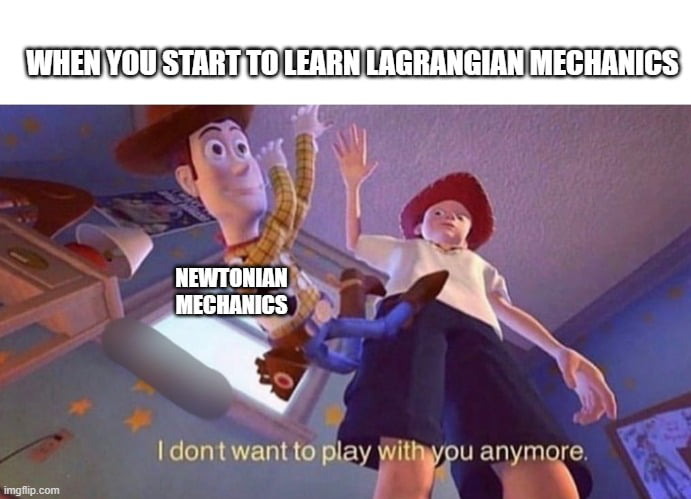

Day 36 - Lagrangian Examples III#

Announcements#
Last “Class” Week
Homework 8 due Friday, Nov 21st (late after Nov 26th)
Next Week: Project Work and Discussion
Last Week: Presentations
Final Project Due Dec 8th (no later than 11:59 pm)
No Final Exam
Complete Google Form#
By November 21st#
Reporting your group members for the final project and a short summary of your project idea for sharing with the class.
Reminders#
We found the Lagrangian for the Atwood’s machine with a rotating pulley to be:
where \(M\) is the mass of the left block, \(m\) is the mass of the right block, \(M_p\) is the mass of the pulley, \(R\) is the radius of the pulley, and \(\phi\) is the angle of rotation of the pulley.
We used the scleronomic constraint \(y_1 = R\phi\) to do this.
Clicker Question 36-1#
We derived the Lagrangian for the Atwood’s machine with a rotating pulley to be:
What is generalized force, \(F_{\phi} = \partial \mathcal{L} / \partial \dot{\phi}\)?
\(+(M-m)gR\)
\(-(M-m)gR\)
\(+(M+m)R^2\dot{\phi}\)
\(-(M+m)R^2\dot{\phi}\)
Something else
Clicker Question 36-2#
We derived the Lagrangian for the Atwood’s machine with a rotating pulley to be:
What is the generalized momentum, \(p_{\phi} = \partial \mathcal{L} / \partial \dot{\phi}\)?
\(+(M-m)gR\)
\(-(M-m)gR\)
\(+(M+m)R^2\dot{\phi}\)
\(-(M+m)R^2\dot{\phi}\)
Something else
Clicker Question 36-3#
For the constraint for the bead in a parabolic bowl (\(z=c\rho^2\)), what are the units of \(c\)?
\([L^2]\)
\([L^{-2}]\)
\([L]\)
\([L^{-1}]\)
Something else
Clicker Question 36-4#
For the bead in a parabolic bowl, there is a generic Lagrangian:
How many coordinates are there, truly? here, each variable is a coordinate
A. 2 B. 3 C. 4 D. 5 E. None of these
Which coordinates are independent?
Clicker Question 36-5#
The Lagrangian for the bead in a parabola does not depend on which of the following?
\(\rho\)
\(\phi\)
\(z\)
More than one of these
None of these